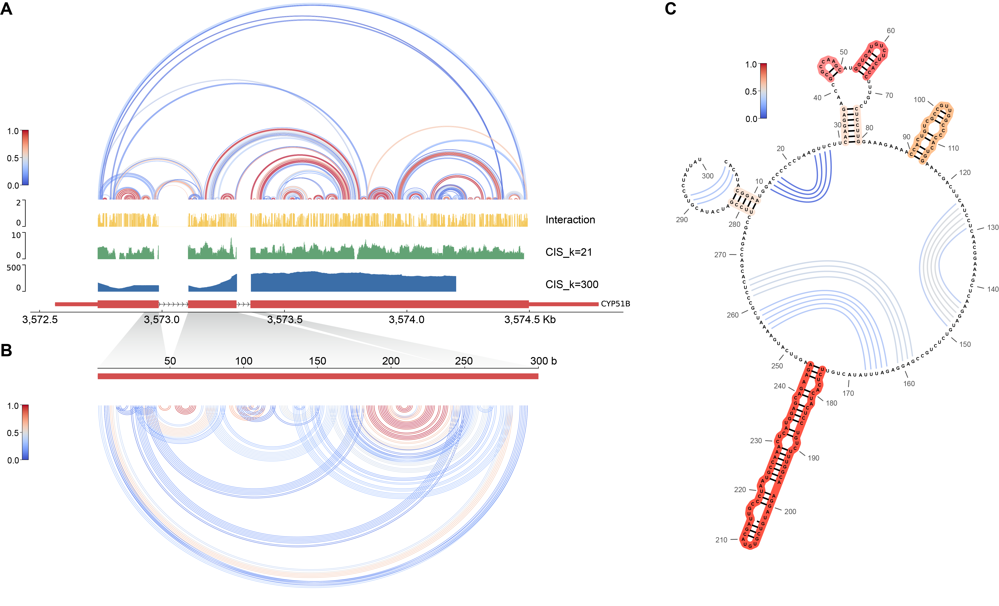

前言
这篇博客主要用于绘制基因的多个层级图，基于 python 语言环境的 pyGenomeTracks 库，它能够实现很复杂的基因组图。
如果你看过圈图的博客，那么它的核型思想也是一样的，都是“数据文件 + 配置文件 (.ini) = 输出图像”。
图A，图B 就是拿 pyGenomeTracks 画的：

工作目录创建
使用以下脚本创建绘图工作环境并按照提示搭建 pyGenomeTracks 的绘图 conda 环境。
它会创建以下文件：
- tracks.ini 基础轨道配置
- data/signal.bedgraph 示例信号
- data/genes.bed 示例基因注释
- region.bed 绘图区间
- requirements.txt
- README.md
- output/ 输出目录
- plot.py 最终绘图脚本
基础轨道配置
我们在 data/genes.bed 进行基础轨道数据配置，BED 文件有两种类型，分别是 BED6 和 BED12，前者只能画一条线，后者能画出外显子、内含子、正负链方向等等，在基础轨道上多了很多元素。我们后面统一使用 BED12 进行绘制。
BED12 有12个字段，这些分别是：
chrom 染色体或序列名称
chromStart 整个转录本的起点
chromEnd 整个转录本的终点
name 特征名称或显示标签
score 特征得分
strand 正负链方向
thickStart 加粗区域/CDS 的起点
thickEnd 加粗区域/CDS 的终点
itemRgb 该条记录的 RGB 颜色
blockCount 外显子数量
blockSizes 每个外显子的长度
blockStarts 每个外显子相对于 chromStart 的起点在配置文件 tracks.ini 基础轨道层级 [genes] 处配置：
[genes] 区块名
file = data/genes.bed 输入数据文件路径
file_type = bed 指定输入文件类型
title = Gene structure 轨道标题，通常显示在轨道侧面的标签区域
height = 1 轨道高度，单位为厘米
style = UCSC 风格，UCSC 会采用 UCSC Genome Browser 的基因结构样式
display = stacked 多个基因或转录本重叠时的排布方式。stacked 表示分行堆叠，尽量避免相互遮挡。
labels = true 是否显示标签
fontsize = 10 字体大小
color = #ffaa00 基因主体的填充颜色
border_color = black 图形边框颜色，none 表示不绘制外显子边框
[x-axis]
where = bottom 在底下开始画文件生成
下面这个脚本只需要输入 GFF3 文件和 基因ID ，就可以自动生成这个基因的 BED12 文件。
信号轨道配置
它其实可以直接读取 BIGWIG2 生成的 BW2 文件，但是为了方便管理，我们统一使用 bedGraph 数据，它很简单，只有四个字段，分别是染色体、起点、终点、信号值：
c05 3571500 3572000 5
c05 3572000 3572500 12
c05 3572500 3573000 48
c05 3573000 3573500 76
c05 3573500 3574000 30这是一段标准的信号轨道配置文件：
[cis] 块名，可以自定义叫什么
file = data/cis.bedgraph 数据文件位置
file_type = bedgraph 数据文件类型
title = CDS_CIS_K=300 轨道名称
height = 3 轨道高度
color = #3b82f6 填充颜色
min_value = 0 轨道最小值
max_value = 500 轨道最大值
type = fill 轨道类型：line/fill/points，后加冒号可调整描边，例如line:2
show_data_range = true 纵坐标范围显示二维数据轨道
核酸二级结构分析与拱门图
数据文件是这样记录的：前三列表示第一个碱基的基因组区间，中间三列表示第二个碱基的基因组区间，第七列表示一些其它评分，可省略。数据文件我们叫做 dp.links 文件。
c05 3572736 3572737 c05 3572800 3572801 0.95
c05 3572740 3572741 c05 3572792 3572793 0.87
c05 3572750 3572751 c05 3572775 3572776 0.72配置文件：
[RNA structure arcs]
file = data/rna_structure.links
file_type = links
title = RNA structure
height = 4
links_type = arcs 绘制拱门
color = #2563eb
line_width = 1.5 拱门线宽
alpha = 0.8 透明度，范围为 0～1
use_middle = true 连接两个区间的中心，适合单碱基区间
compact_arcs_level = 0 拱门高度与两个碱基间的距离成比例其它参数
orientation = inverted 拱门朝下
compact_arcs_level = 0 拱门高度与两个碱基间的距离成比例
compact_arcs_level = 1 对长距离拱门进行一定压缩
compact_arcs_level = 2 所有拱门高度接近一致
如果第七列是配对概率，还可以尝试用颜色梯度表示分值：
color = viridis
min_value = 0
max_value = 1下面这个脚本能将分析得到的 dp.eps 文件转换为 dp.links 文件，但基因组坐标需要借助映射脚本重新映射：
而这个脚本能将 dp.links 文件转换为一维的 bedgraph 文件，用于展示基因上的互作强度，但是去处了和谁互作的信息。
绘图配置
配置文件 tracks.ini 的头部区域可以配置绘图参数：
# Plot settings read by plot.py
# plot_region = c05:3572563-3574783 绘图的具体区域
# plot_output = output/example.png 输出文件位置设置，可以改为svg输出矢量图
# plot_dpi = 300 当输出位图时，此处修改分辨率配置中的层级顺序决定了绘制顺序。
下面这个可以调整轨道之间的间隙：
[spacer]
height = 0.3基因组映射脚本
对所有从1开头的 dp.limks 文件和 bedgraph 文件的基因组坐标重新映射，输入为文件中的如下的格式。每一行都代表一个左闭右闭区间，在区间内映射，在区间外跳过：
3572108,3572986
3573107,3573304
3573362,3574783